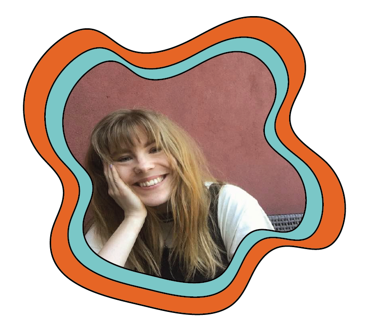

Su-chef - Normal A/S
Butiksassistent - Normal A/S
Barnepige
2023
2022
2018-2021
Mit navn er Julie, jeg er 25 år og til dagligt studerer jeg til multimediedesigner på KEA. Min uddannelse giver mig mulighed for at udforske en bred vifte af discipliner, lige fra grafisk design og webudvikling til videoproduktion og UX-design. I fremtiden ønsker jeg at arbejde inden for front-end design, hvor jeg håber at kunne designe brugergrænseflader, der kombinerer æstetik med funktionalitet. Når jeg ikke bruger tid på mit studie, nyder jeg at eksperimentere i spilmotoren Godot. Her anvender jeg de tekniske og kreative værktøjer, som jeg har tilegnet mig gennem undervisningen på KEA, blandt andet Adobe Illustrator og generel viden omkring kodning.
Su-chef - Normal A/S
Butiksassistent - Normal A/S
Barnepige
2023
2022
2018-2021
HTML
CSS
Javascript
Adobe Illustrator
Adobe Premiere Pro
Godot Spilmotor
Niveau: 3/5
Niveau: 3/5
Niveau: 2/5
Niveau 2/5
Niveau: 1/5
Niveau: 1/5